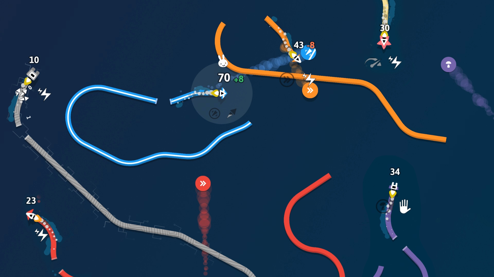
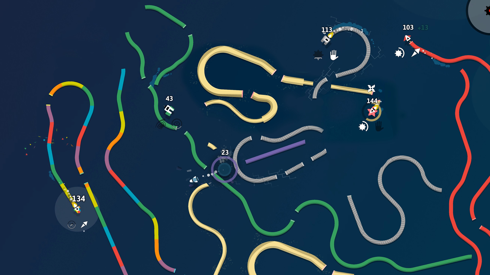
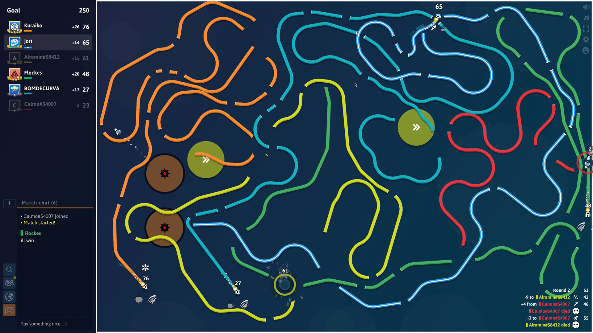

Curve Fever Pro is a fast-paced multiplayer browser game where you control a constantly-moving ship that leaves a deadly trail behind you. Inspired by the classic "Achtung, die Kurve!" (1995) and its Flash-era successors, Curve Fever Pro modernizes the concept with 30 unique powers, a ranking system, and stunning visuals. I spent many rounds getting boxed in by my own trails before I learned that in this game, your greatest weapon is also your greatest weakness.
1. Game Basics
Curve Fever Pro puts you in control of a small ship that moves continuously across a dark arena. Your ship leaves a glowing, colored trail wherever it goes — and those trails are the core mechanic of the entire game.
The rules are simple: don't crash into any trail (yours or anyone else's), don't hit the arena walls, and try to be the last ship standing. When a player crashes, they're eliminated from the round. The goal is to accumulate points by surviving and by attacking opponents with your equipped powers.
What makes Curve Fever Pro stand out from similar games is its 30 unique powers system. You can equip two powers per match — one for offense and one for defense — which adds enormous strategic depth to every round.

2. Controls & Movement
Curve Fever Pro uses simple but precise controls that reward smooth, deliberate movement:
- Move Left/Right: Use the arrow keys (← →) or A/D keys to steer your ship
- Power 1 (Up Slot): Press Up arrow or W to activate your first equipped power
- Power 2 (Down Slot): Press Down arrow or S to activate your second equipped power
Your ship never stops moving, so every turn you make extends your trail further. The key to good movement is thinking 2–3 seconds ahead — a sharp turn might save you now, but it could trap you later when the arena fills with trails.
Pro movement tip: Keep your turning rhythm smooth and deliberate. Panic-turning creates tight corridors with no exit, which is the #1 reason new players crash.
3. Powers System
Powers are the heart of Curve Fever Pro's strategic depth. There are 30 unique powers organized into 4 categories, and you can equip 2 per match.

Power Categories
- 🔵 Blue — Passives: Defensive powers that help you survive longer. They provide protection and defense values. Exception: Shield can also steal points.
- 🟣 Purple — Shots: Offensive projectiles that fire bullets or beams at opponents. When a projectile hits, you steal a percentage of their points. Includes homing shots, zaps (area-of-effect), and lasers.
- Red — Bombs/Mines: Thrown items that explode and destroy trails, creating gaps for pathfinding. Mines trigger on contact, trigger bombs activate manually, and time bombs explode after a delay. Also steal points on hit.
- 🟢 Green — Fevers: Thrown items that apply negative effects when an opponent hits them. Each fever has a unique debuff. Also steal points on hit.
How Powers Work
- Powers are unlocked by leveling up (earn XP from opening crates)
- Each power has a cooldown — you can't use the same power twice in a row
- Attack powers steal a percentage of the target's points, scaled by their defense
- Defense is calculated by multiplying the defense values of both equipped powers
4. Game Modes
Curve Fever Pro offers multiple ways to play:
- Quick Play (Ranked FFA): Get matched with 5 players near your skill level. First to reach the target score wins. Your primary mode for climbing the leaderboard.
- Classic Free for All (Custom): Same as Quick Play but you choose your opponents. Great for playing with friends.
- Survival FFA: All offensive powers are disabled. Points come only from outliving opponents. Pure pathfinding challenge.
- Pickups FFA: Power-ups spawn on the field. Green pickups affect you, orange pickups affect enemies. Fevers are disabled.
- Teams: Work with teammates to eliminate the opposing team. Points are earned as a team by winning rounds.
- 1v1: Head-to-head duels. The ultimate test of skill.

5. Scoring & Winning
In FFA Classic and 1v1, there are two ways to earn points:
- Survival points: +10 points for every opponent who dies while you're still alive. Staying alive consistently is the most reliable way to score.
- Attack points: Use your powers to steal a percentage of an opponent's points. Hitting high-scoring players gives bigger rewards, but their defense reduces your steal.
The target score scales with player count: 50 points for 2 players, increasing by 50 for each additional player (10 players = 450 points to win).
In Teams mode, your team scores 1 point per round won. A round is won when all opponents on the other team are eliminated.
6. Pro Tips & Strategies
After many rounds, here are the strategies that consistently win games:
- Think ahead, not just now. Every turn you make should leave you an escape route 2–3 seconds from now.
- Treat open space like treasure. When you have room to breathe, you can plan. When you don't, you're reacting — and reactions lead to crashes.
- Let others fight. Sometimes the smartest play is to drift near the edge and wait for opponents to eliminate each other.
- Avoid tight spiral patterns. Spirals look cool but they trap you with no exit. Keep your curves wide and open.
- Cut-offs are king. Place your trail ahead of an opponent's path to force a panic turn. A clean cut-off is surgical.
- Don't overcommit to traps. If you chase a cut-off too hard, you'll collide with your own line. Know when to retreat.
- Target high scorers. Attack powers steal a percentage — hitting the leader yields the biggest point swings.
- Balance offense and defense. Equip one attack power and one defense power for a well-rounded build.
7. Common Mistakes
These are the traps that catch almost every new player:
- Panic turning: Seeing an incoming trail and yanking hard creates a tiny corridor with no exit. Stay calm and make smooth turns.
- Building your own cage: Drawing long predictable curves lets opponents read your path and box you in.
- Ignoring power cooldowns: Using both powers at once leaves you defenseless. Stagger your power usage.
- Chasing every kill: Aggression is great until the arena gets crowded. Know when to play defense.
- Not opening crates: Crates give XP for leveling up and unlocking new powers. Always open them and play Quick Play when you have free crate slots.
8. FAQ
Curve Fever Pro rewards patience and spatial awareness over raw reflexes. The best players aren't the fastest — they're the ones who plan their routes three moves ahead and let their opponents make the mistakes. Practice in Quick Play, experiment with different power combinations, and remember: your trail is both your sword and your shield. Use it wisely.